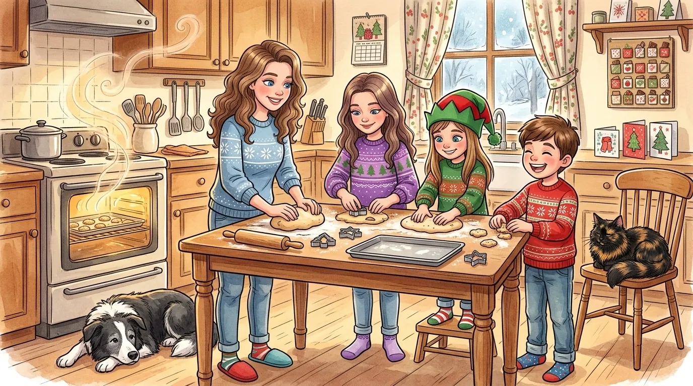
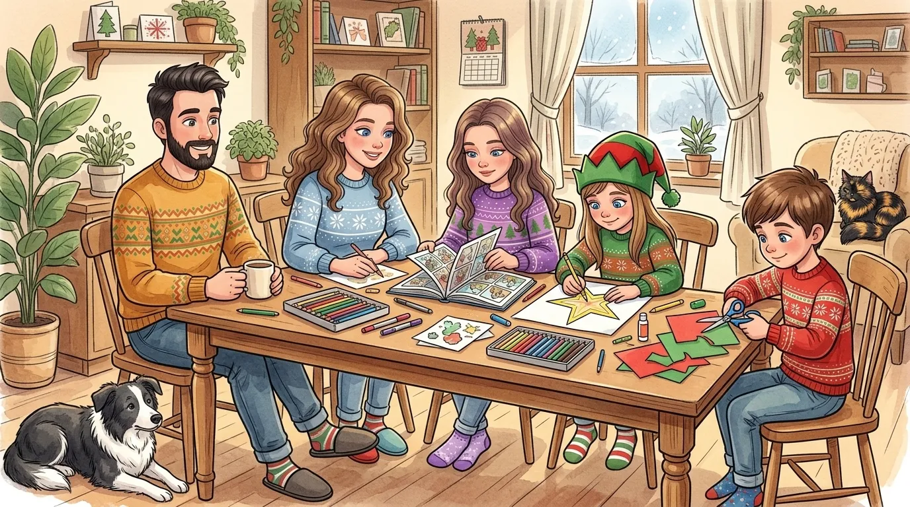
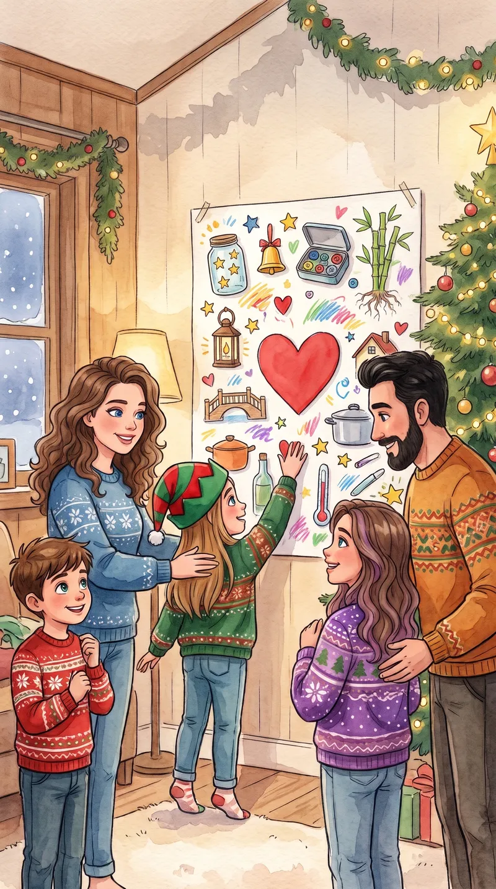
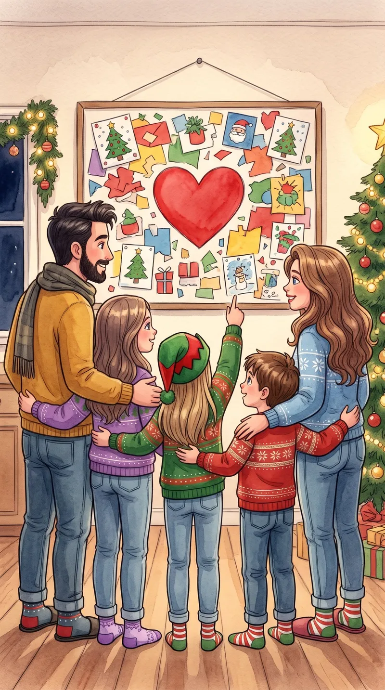
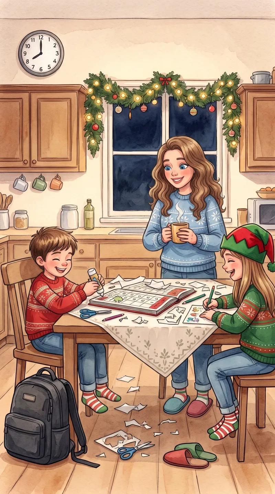

Domani è il primo dicembre, e a casa nostra il calendario con i cioccolatini c'è. Ce l'ha regalato una nonna, ed è appeso al suo posto.
Solo che il nostro Avvento vero non sta lì dentro. Sta nel forno.
Ogni anno, a dicembre, biscotti, torte e cioccolatini ce li facciamo noi. E ogni anno le ricette sono nuove, diverse, e arrivano da tutto il mondo. Così ogni giorno, più che un cioccolatino da scartare, c'è una ricetta da provare insieme. Qualcuna riesce benissimo. Qualcun'altra finisce mangiata lo stesso, per solidarietà.
È il nostro modo di aspettare il Natale: con le mani in pasta, e con la cucina che profuma.

Quest'anno, accanto al forno, c'è un cartellone
Quest'anno ho preparato anche un altro calendario, e te lo racconto perché è nato da un'arrabbiatura.
Mi ero stufata di vedere in giro quei kit che promettono di cambiarti il figlio in sette minuti al giorno. Sette minuti, un bambino nuovo, e tu finalmente una brava mamma. Io ai miracoli a tempo non ci credo. Nessun calendario cambia la vita in sette minuti al giorno. E chi te ne vende uno così ti vende anche il senso di colpa per quando non funzionerà.
Passata la rabbia, però, mi sono chiesta come lo avrei voluto io, un calendario, per noi. E la risposta è stata semplice: volevo un dicembre in cui guardarci. Ognuno dentro di sé, e poi negli occhi degli altri.
L'ho chiamato "Specchio e Finestra".
Come passa una giornata
Ogni giorno comincia da qualcosa da guardare o da ascoltare: un racconto, un fumetto, un quadro, una canzone. Serve a far venire le domande, senza che nessuno le debba fare a freddo.
Poi arriva una pagina pratica, con una cosa piccola da provare subito.
Poi c'è lo specchio. È una stella da colorare, dal centro verso fuori, per dirsi a che punto si è quel giorno. Niente numeri e niente punteggi: solo colore.
E infine c'è la finestra, che è il momento di alzare la testa: una cosa da fare con qualcun altro, e un pezzo da ritagliare.
Si scrive pochissimo. Si colora, si ritaglia, si mette una crocetta. L'ho voluto così perché deve sembrare un gioco, e non un altro compito da finire.

Il cartellone di tutti
Quel pezzo ritagliato è la parte a cui tengo di più.
Ogni giorno finisce su un cartellone, uno solo per tutta la famiglia. Io la chiamo la mappa della tribù. Non ha un disegno già pronto: ognuno attacca il suo pezzo dove gli pare e come gli pare, e la mappa cresce storta e colorata come cresciamo noi. Il 24 dicembre, al centro, va il cuore della tribù.
Mi piace per un motivo preciso. Alla fine non resta una pila di schede, una per figlio. Resta una cosa sola, fatta da tutti. E se un giorno si salta, il cartellone non si rovina: ha solo un pezzo in meno, e nessuno se ne accorge.


E noi, lo facciamo?
Sarebbe bello raccontarti che da domani saremo tutti e cinque intorno al tavolo, ogni sera, puntuali. Non sarebbe vero.
Lo faremo quando ci riusciamo. Magari durante le vacanze, quando le giornate si allargano. L'ho costruito apposta perché funzioni anche così, perché arrivare al 24 con tutte le caselle fatte non è mai stato lo scopo. Lo scopo è guardarsi dentro, e guardare le persone che abbiamo intorno. E quello si può fare anche a gennaio.

Se ti va di provarlo, lo trovi nella pagina del calendario, qui sul sito. C'è il libro su Amazon, che arriva già pronto, e c'è il PDF su Eduki, da stampare a casa.
Io intanto accendo il forno.
La domanda di oggi: a casa tua, che profumo ha dicembre?
A presto!